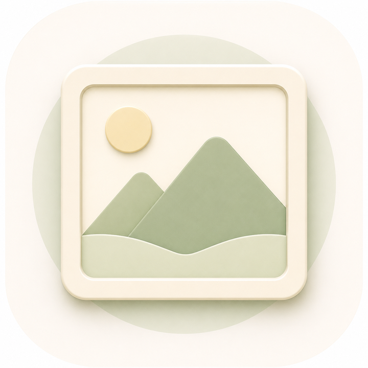

app / kasumitsumugi

霞紬
かすみつむぎ / kasumitsumugi
台本、字幕、音声、画像などを組み合わせ、動画制作を支援するためのアプリ。
- 何をするアプリか
- 動画制作に必要な素材を場面ごとに整理し、制作工程を確認するためのアプリです。
- 解決する問題
- 台本と画像、音声、字幕の対応関係を整理し、制作途中の確認をしやすくします。
- 対応環境・開発状況
- 制作工程での利用を想定。開発中です。未完成の機能は今後確認します。
主な機能
- 台本読込
- シーン割当
- 字幕、音声、画像の整理
- タイムラインによる工程確認
基本的な使い方
- 台本と素材を用意する。
- 場面ごとに画像、音声、字幕を割り当てる。
- タイムラインで制作内容を確認する。
想定利用者
短い動画や教材動画の素材と台本を整理したい制作者。
スクリーンショット
実スクリーンショットを確認しています。